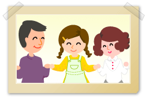
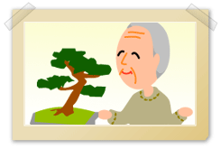

|

|
 |

認知症ケアは1人ではできません。
まずケア提供者は自分自身の限界を知ることが大切になります。自分のできることとできないことを知ることです。何でもがんばる、私がやらなければ、と思うことは限界を知らないということでしょう。
それから次に一緒に働くそれぞれのチームメンバーの能力を知ることが必要となります。それは自分自身ができないところをまた相手ができないところを補う力になるからです。 統一したケアであれば認知症の人にとっては混乱が少ないからです。 |
認知症の人が安心して暮らせる生活環境づくりが重要になってきます。よい環境は生活者の自立を助け、介護をサポートし、治療効果があるといわれています。
認知症の人本人を中心にして、その家族と共に考えていくものです。環境の配慮として「物理的バリアフリー」があります。
まずその人の認知症の程度、見当識障害、視空間認知障害などをアセスメントすることが必要になります。 環境面では安全の配慮が叫ばれていますが、機能的という環境も認知症の人の場合抜け落ちてはいけない点です。生活場面でいかに現存能力（できること）を活用するか、が重要であり、そのためには環境調整が必要になります。 画一的な安全対策をとるのではなく、理解しやすい位置情報、手すり設置、段差の考慮、機能的に体を動かせるような空間確保など、その人に合った環境調整をすることが必要です。
また認知症の人は、具体的に壁にカレンダーや日めくりを貼ったり、炬燵やテーブルにみかんや季節の花を置いたりすることにより、「今がわかる」「四季が感じられる」と安心できます。
このように認知症の人が心身共に安全で安楽な状態で、快適な1日を過ごし、安眠できる環境を整え援助することが必要ですが、その人がこれまでにしてきた役割（家事作業など）を行う力がある場合は、共に行い役割の継続性の意味をもたせることも重要です。すべてを援助するのではなく、共に環境の調整を行うことを大切にしていきましょう。 |
ケアにあたる際、視覚、聴覚、味覚、臭覚、触覚など人間のもつあらゆる感覚を刺激することを心がけます。つまりひとつのケアを行うときに、感覚を刺激する配慮をするのです。
たとえば、フットケアや清拭時には季節の花を飾り（視覚、臭覚）、その人の好きな音楽（聴覚）、温泉の素などの入浴剤（臭覚）を用い、その後、保湿剤をたっぷり塗ってマッサージ（触覚）を行う、食事の際には、花を飾り（視覚、臭覚）、クロスをかけ、陶器の茶碗（触覚）を用意するなどが考えられます。またリラクゼーション効果のある音楽（聴覚）を流すのもよいでしょう。
このようにひとつのケアを行う際に、感覚刺激の工夫を行っていきます。 |
時代とともに家族も変化しています。
その変化の中で、認知症の人を抱える家族は介護を担いきれない局面にぶつかることがあります。そして家族の中でさまざまな葛藤が生まれます。施設などに入所させた家族は常に胸の奥で自分自身を責めていたりします。
逆に、施設入所以来面会にこない家族もいます。「もう二度と顔を見たくない」という家族もいます。でも面会にこなくても、顔を見たくなくても、そこまでに至る家族歴がそれぞれの家族にはあります。また家族の一員を他者に預けるということは、大きな決断でもあります。 遠くから「母は元気なんだ」「生きているんだ」と家族が思って暮らせることは、ケア提供者の家族に対するケアなのかもしれません。
ケア提供者はこれまでの家族歴、関係を引きずっての葛藤を理解して、家族と付き合っていくことが重要です。家族を支えることが認知症の人を支えることにつながっていくのです。 |
| 10. 本人の尊厳を守る（身体拘束・虐待・自己決定権） |
認知症高齢者が直面している人権問題に「身体拘束」という人権侵害があります。
わが国では1998年に「抑制廃止福岡宣言」が採択され、翌年厚生省（現厚生労働省）は、介護保険施設運営基準の中に「身体拘束における禁止規定」を告示し、規定条約を作りあげました。現場ではそれを受けて、拘束禁止における管理や技術について試行的な取り組みを行ってきています。しかし、まだ体のずり落ち防止と称して「安全ベルト」を装着したり、胃ろうやチューブを抜いてしまうためミトンをはめたりしていることも存在しています。
また「虐待」については、2006年の高齢者虐待防止法施行後はじめて行った全国調査が厚生労働省から2007年8月に発表され、その数字によると家庭内で1万2575件、施設内で53件の計1万2628件、虐待が確認されました。家庭内における虐待は息子と夫で半数を占め、その被害者は女性が77%で、84%が同居している人からの虐待でした。理由としては、介護者が長年の介護に疲れ果てたり、一生賢明のあまり追いつめられて虐待するケースや経済問題、長年にわたる家族関係やケアの問題など多様な要因が考えられます。別の調査では虐待された人の8割の人になんらかの認知症の症状がみられたという数字もあり、介護負担の軽減には認知症の正しい知識や介護のポイントの理解が大切です。
また認知症の人は自分と違う、とくに「認知症の人は自分たちと違う存在だから、自分たちと同じことができなくて当たり前」と決めつけて認知症の人の行動を制限したり、プライバシーを守れなかったりと、多くの人権侵害がケア提供者の姿勢から発することが見受けられます。たとえ認知症という疾患をもつ人でも、そうでない人と同じように生活していく権利があるという、いわゆるノーマライゼーションということを理解しないままの行動が、このような人権の侵害を生むということを理解しておく必要があります。 |
|